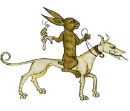
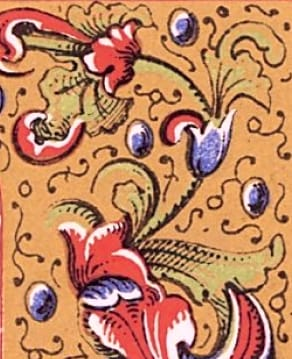
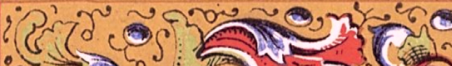

1
oyaume-Uni
oyaume-Uni
Loi adaptée par le roi Édouard III
Il était interdit de porter des chaussures longues et pointues au XXe siècle.
Informations supplémentaires
Cette loi visait à empêcher les classes inférieures de porter des chaussures, qui étaient considérées comme un symbole de statut social élevé.
Elle était cependant difficile à mettre en place et a donc été abolie au XVIe siècle.
  2
États-Unis — Texas
La “ Texas Cow Milking Law ” disposait que la traite de la vache d’un voisin était illégale et était sanctionnée d’une amende de 10$.
Informations supplémentaires
Il est important de noter que la loi ne s'appliquait qu'à la traite des vaches. Il n'était pas illégal de traire d'autres animaux, comme des chèvres ou des moutons.
DataLaws
3. Singapour
La vente et l'importation de chewing-gum est interdite.
Informations supplementaires
Les voyageurs peuvent apporter deux paquets de chewing-gum par personne. Il existe cependant des exceptions à l’interdiction pour la gomme à mâcher à usage thérapeutique. L'amende maximale pour avoir mâché du chewing-gum en public est de 1 000$.

4
Etats-Unis
Seule la position du missionnaire est autorisée. La sodomie, comme dans de nombreux États du Sud, est passible de prison.
Informations supplementaires
La loi visait tout acte sexuel à but non reproductif, et non uniquement les hommes homosexuels.
France
À Essarts-en-Bocage, entre le 5 et le 11 octobre 2019, il était obligatoire d’être « en joie » entre 8 et 22 heures et de faire sourire au moins 10 personnes par jour.
Commentaire de la rédaction
Cela rappelle un peu Brave New World, le livre dystopique de Aldous Huxley…